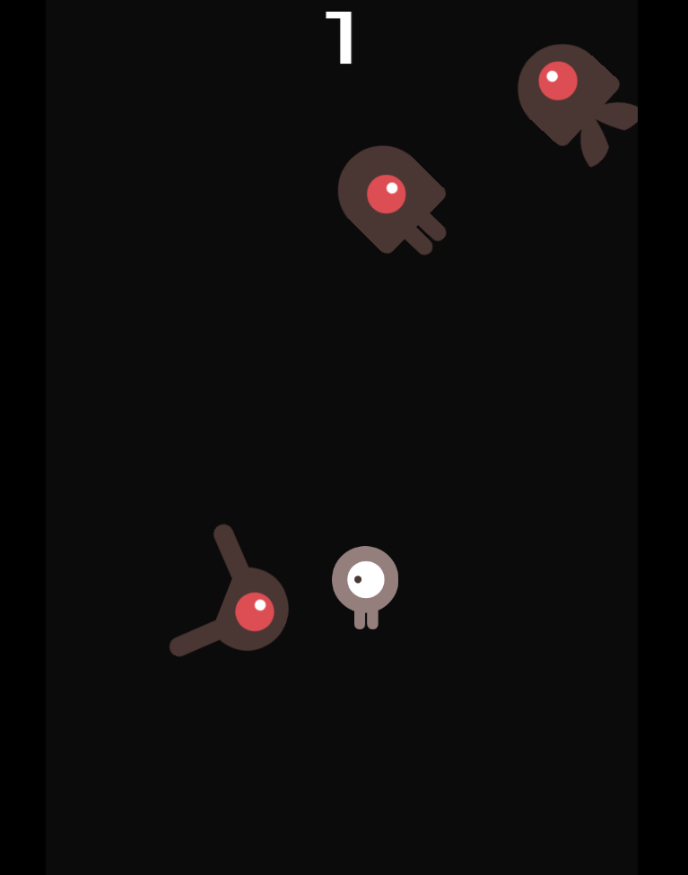

Dodge the Creeps!

Jogo 2D desenvolvido na plataforma Godot. Esse jogo consiste em evitar ser atingido pelos monstros que aparecem
na tela. Esse jogo faz parte do Tutorial 2D do Godot. Desenvolvido usando a linguagem GDScript.
Tecnologias Utilizadas
Godot
GDScript
Dodge the Creeps!
2D game developed on the Godot platform. This game involves avoiding being hit by the monsters that appear on the screen.
It is part of the Godot 2D Tutorial. Developed using the GDScript language.
Technologies Used
Godot
GDScript